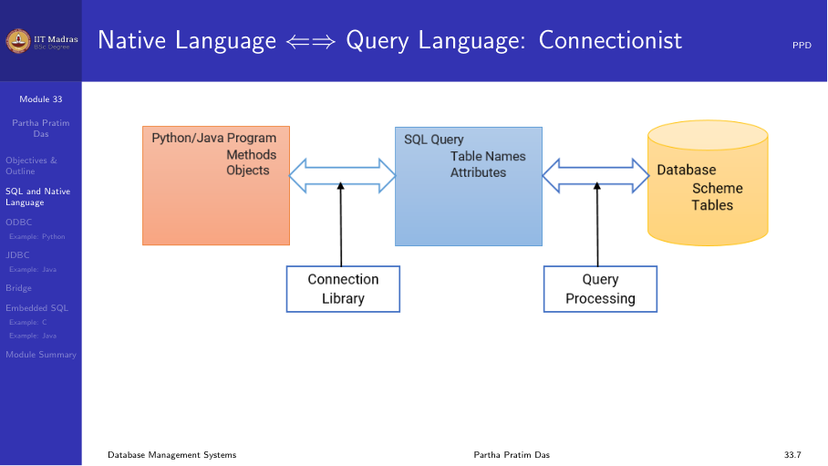
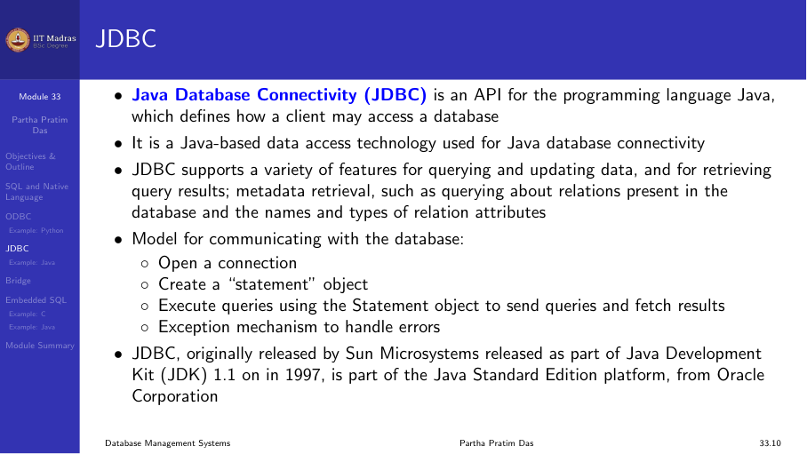
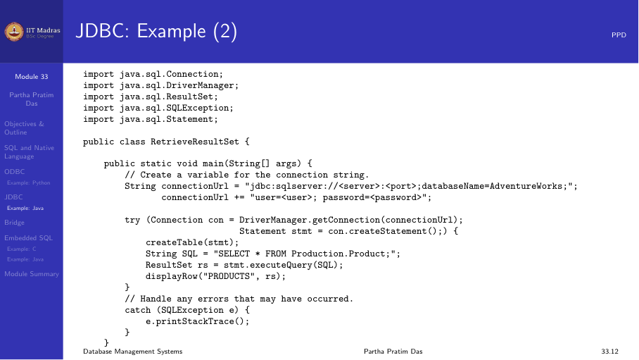

7.3 SQL and native language database connectivity
The paradigm mismatch
Applications are written in general-purpose programming languages (Java, Python, C++), while databases use SQL. These are two different paradigms: object-oriented or procedural languages on one side, and the relational model with SQL on the other.
To build a database-backed application, we need a bridge between the two. There are several approaches:
- Database API libraries — ODBC, JDBC, Python DB-API
- Embedded SQL — SQL statements embedded directly in a host language
- ORM (Object-Relational Mapping) — automatic mapping of objects to tables
ODBC (Open Database Connectivity)
ODBC is a standard API for accessing databases, developed by Microsoft in the early 1990s. It provides a uniform interface to different database systems.
Architecture: - Application. The program that needs database access. - ODBC Driver Manager. Manages communication between the application and drivers. - ODBC Driver. A DLL specific to each database (e.g., Oracle driver, MySQL driver, PostgreSQL driver). - Data Source. The actual database and its configuration.
The application uses the same ODBC calls regardless of the underlying database. The driver manager routes the calls to the appropriate driver.

ODBC workflow: 1. Allocate an environment handle. 2. Allocate a connection handle and connect to the data source. 3. Allocate a statement handle. 4. Execute SQL statements. 5. Fetch results. 6. Free handles and disconnect.
JDBC (Java Database Connectivity)
JDBC is the Java equivalent of ODBC. It provides a standard API for Java programs to access databases.
JDBC drivers come in four types: 1. JDBC-ODBC bridge. Translates JDBC calls to ODBC calls. Useful for databases that only have ODBC drivers, but has performance overhead. 2. Native-API driver. Converts JDBC calls to the database’s native API (e.g., Oracle OCI). Requires client-side libraries. 3. Network protocol driver. Uses a middleware server that converts JDBC calls to the database protocol. No client libraries needed. 4. Thin driver. Converts JDBC calls directly to the database’s wire protocol. Pure Java, no client libraries needed.

JDBC workflow:
// 1. Load driver
Class.forName("org.postgresql.Driver");
// 2. Connect
Connection conn = DriverManager.getConnection(
"jdbc:postgresql://localhost/db", "user", "pass");
// 3. Create statement
Statement stmt = conn.createStatement();
// 4. Execute query
ResultSet rs = stmt.executeQuery("SELECT * FROM students");
// 5. Process results
while (rs.next()) {
System.out.println(rs.getString("name"));
}
// 6. Clean up
rs.close();
stmt.close();
conn.close();
Prepared statements are a better alternative to Statement. They precompile the SQL, prevent SQL injection, and handle parameter substitution:
PreparedStatement pstmt = conn.prepareStatement(
"INSERT INTO students (id, name) VALUES (?, ?)");
pstmt.setInt(1, 101);
pstmt.setString(2, "Alice");
pstmt.executeUpdate();Python DB-API
Python has its own database API specification, PEP 249 (DB-API 2.0). It defines a standard interface that all Python database drivers follow.
import psycopg2
# Connect
conn = psycopg2.connect(
host="localhost",
database="mydb",
user="user",
password="pass"
)
# Create cursor
cur = conn.cursor()
# Execute query
cur.execute("SELECT * FROM students")
rows = cur.fetchall()
for row in rows:
print(row)
# Execute with parameters (SQL injection safe)
cur.execute(
"INSERT INTO students (id, name) VALUES (%s, %s)",
(101, "Alice")
)
conn.commit()
# Clean up
cur.close()
conn.close()The DB-API workflow mirrors ODBC/JDBC: 1. Connect to the database. 2. Create a cursor. 3. Execute SQL through the cursor. 4. Fetch results. 5. Commit or rollback transactions. 6. Close cursor and connection.
Bridge: Direct database access vs. ORM
Database API libraries give direct access to SQL. An alternative is Object-Relational Mapping (ORM), which maps database tables to programming language objects automatically.
| Aspect | Direct API (JDBC/ODBC) | ORM (Hibernate, SQLAlchemy) |
|---|---|---|
| Control | Full control over SQL | Abstraction over SQL |
| Performance | Optimized queries | May generate inefficient queries |
| Complexity | More boilerplate code | Less code, but complex setup |
| Learning curve | Need SQL knowledge | Need to learn ORM framework |
Embedded SQL
Embedded SQL allows writing SQL statements directly inside a host language program (C, C++, Java). A preprocessor (precompiler) converts embedded SQL into function calls to the database API.
Example in C:
EXEC SQL INCLUDE SQLCA;
EXEC SQL BEGIN DECLARE SECTION;
int emp_id;
char emp_name[50];
float salary;
EXEC SQL END DECLARE SECTION;
EXEC SQL CONNECT TO 'mydb' USER 'user';
EXEC SQL DECLARE emp_cursor CURSOR FOR
SELECT id, name, salary FROM employees;
EXEC SQL OPEN emp_cursor;
while (1) {
EXEC SQL FETCH emp_cursor INTO :emp_id, :emp_name, :salary;
if (SQLCODE != 0) break;
printf("%d %s %f\n", emp_id, emp_name, salary);
}
EXEC SQL CLOSE emp_cursor;
EXEC SQL DISCONNECT;Advantages of embedded SQL: - SQL is explicit and visible in the code. - The precompiler can perform type checking and optimization. - Good performance for simple queries.
Disadvantages: - Mixes two languages in one file. - Requires a precompilation step. - Not portable across different databases.
Embedded SQL is less common today. Most modern applications use JDBC/ODBC directly or use an ORM framework.
Summary
| Technology | Language | Standard | Key feature |
|---|---|---|---|
| ODBC | C/C++ | Microsoft standard | Driver-based, cross-database |
| JDBC | Java | Java standard | Type 1-4 drivers, prepared statements |
| Python DB-API | Python | PEP 249 | Consistent interface, parameterized queries |
| Embedded SQL | C/C++, Java, COBOL | SQL standard | SQL in source code, precompiler needed |
The choice depends on the application requirements, the programming language used, and the specific database system.